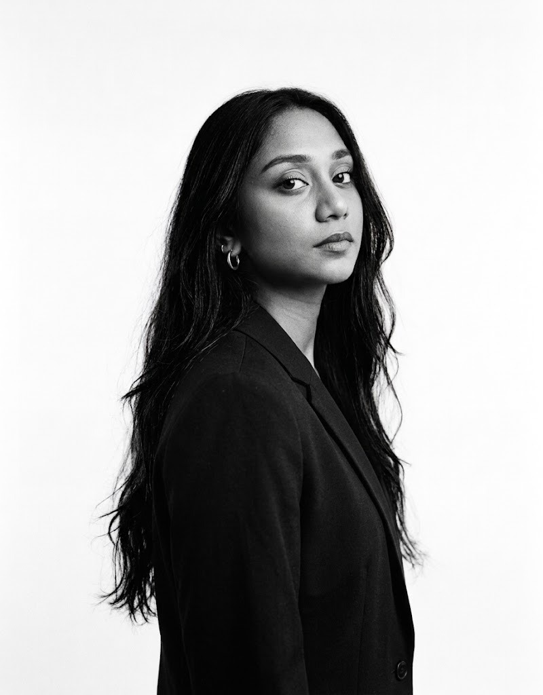

COMPUTER SCIENCE STUDENT — MOBILE & WEB DEVELOPMENT
Christine Tremaine Isaac
Aspiring software engineer
I went into tech because it's one of the few fields where an idea and a keyboard are genuinely enough to build something real. I like the specific, unmatched feeling of staring at broken code for an hour, then watching the logic click and the error disappear — going from frustration to a working solution in a single keystroke. That's the feeling I keep chasing, project after project.
I'm currently studying Computer Science with a focus on mobile app development ( Netbeans Java, Typescript, Kotlin, Android Studio) and front-end web development, and I build toward becoming a well-rounded software engineer who can move comfortably between platforms.
